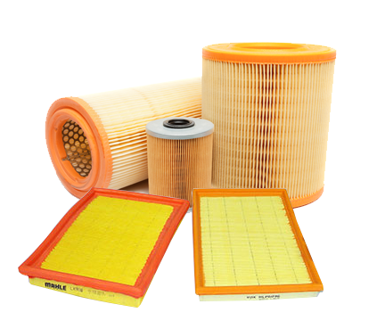

FILTRO DE AR
O filtro de ar evita que partículas de sujeira sejam aspiradas pelo motor. Dessa maneira, garante que o ar seja livre de impurezas e circule pelo motor, até a câmara de combustão do veículo.
A filtragem também evita o desgaste de peças como biela e pistões.
Quando você não faz a manutenção do filtro de ar, o automóvel consome mais combustível, pois o excesso de sujeira obriga o propulsor do carro a trabalhar com mais intensidade e você a gastar mais combustível.
O filtro de ar é um dos filtros de carro mais importantes porque ajuda no bom funcionamento do veículo.